Before you start Page 1 of 27
How to use Silent Partner
A walk through every page of the site, in plain English. Nothing here is technical, and nothing you do while reading changes your books.
There are 28 short pages. Reading all of them takes about fifteen minutes.
Before you start Page 2 of 27
What this site is for
It keeps track of the shop’s money all year, so that “how much can we spend, or give away?” takes a minute instead of a week.
It watches the bank balance, the bills that are coming, and what the shop usually takes in. From those it works out one number: what is genuinely safe to spend today.
It is not a bookkeeping program. It will not do your taxes, run payroll, or send invoices. You still need whatever you already use for those.
Before you start Page 3 of 27
Three things it will never do
This matters more than any feature, so it comes first.
- It never moves money. It cannot reach your bank. It only reads what you type in.
- It never sends anything. The weekly update is text you copy and send yourself, if you want to.
- It never decides. It recommends, and it pushes back when something looks risky. Every decision stays yours.
Before you start Page 4 of 27
Your first twenty minutes
Do these five things, in this order. After the second one, the big number on the home page starts being real.
- Set a password only you know. Covered on the next few pages.
- Type in your bank balance. This is the foundation; nothing works properly without it.
- Add the bills that come every month. Payroll, taxes, anything regular.
- Add the last few weeks of sales. Eight weeks is plenty.
- From then on, log expenses as they happen. A minute each.
Opening it Page 5 of 27
Unlocking the site
Everything in the shop’s books is scrambled until the right password is typed in. That is what this screen is for.
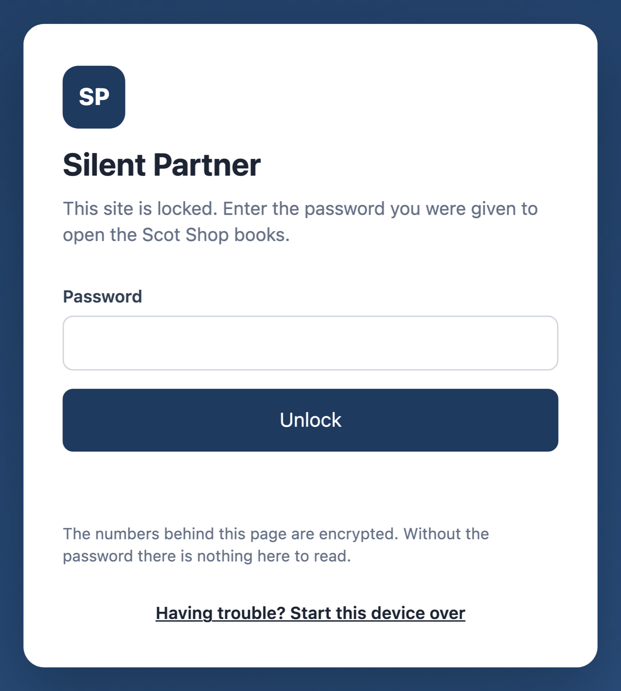
- Type the password into the box.
- Press Unlock.
Opening it Page 6 of 27
Make the password your own
The password you were given is known by several people. Before you type in real figures, change it to one only you know.
- Press Settings along the top.
- Find the box headed Privacy & password.
- Type the password you were given into Current password.
- Type your new one into both of the next boxes.
- Press Change password.
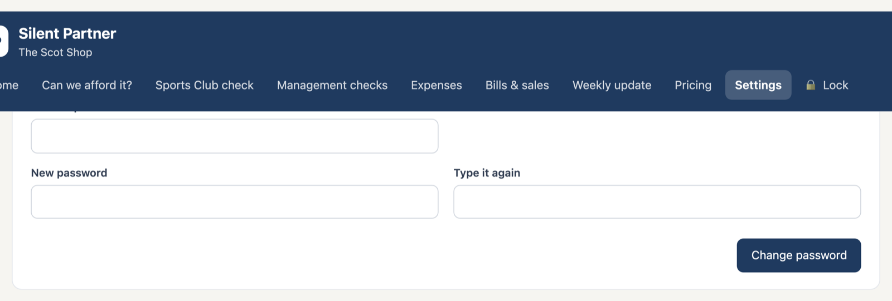
Opening it Page 7 of 27
It locks itself
If the site is left alone for fifteen minutes, it locks again on its own. That way the books are not sitting open on a screen in the shop.
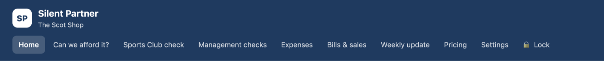
- Press Lock whenever you walk away.
- Nothing is lost when it locks. Everything is saved the moment you type it.
- To get back in, type your password again.
The home page Page 8 of 27
The big number
This is the whole point of the site. It is the money left over after every bill it knows about, and after setting your cushion aside.
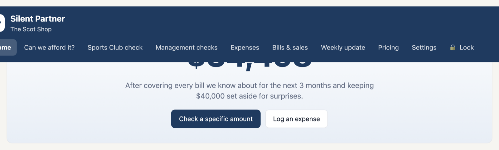
It is deliberately cautious. It has already taken off the bills you have not paid yet, the regular bills coming due, and the cushion you said you always want to keep.
The home page Page 9 of 27
How it worked that number out
Scroll down the home page and every line of the arithmetic is written out. Nothing is hidden.
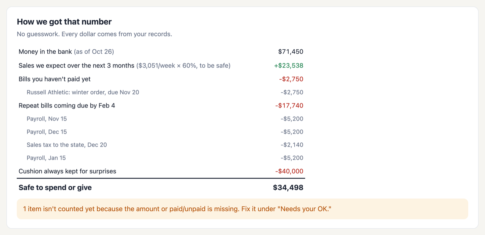
| Money in the bank | The last balance you typed in, with the date you typed it. |
|---|---|
| Spent since that balance | Anything you have logged as paid since then. |
| Sales we expect | Your recent weekly average, multiplied by how cautious you asked it to be. |
| Bills you haven’t paid yet | Every unpaid expense, listed by name. |
| Repeat bills coming due | The regular ones falling inside your window. |
| Cushion | The amount you said you always keep aside. Never counted as spendable. |
The home page Page 10 of 27
Needs your OK
The site flags anything that looks like it needs a second glance. It never changes or deletes anything by itself — it only asks.
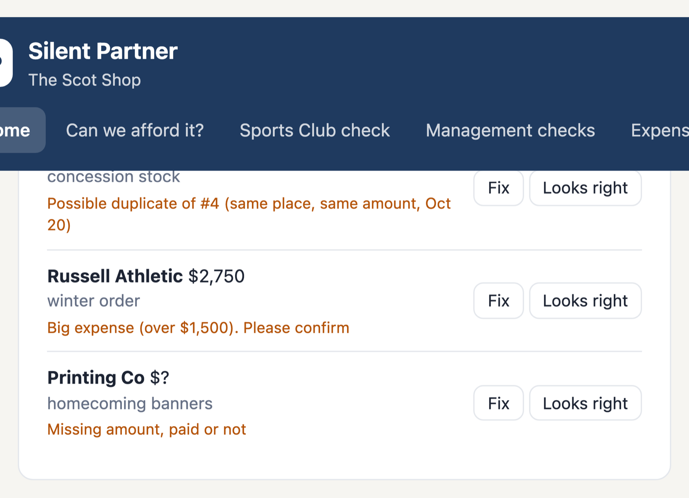
There are three reasons something gets flagged:
| Something is missing | No amount, no date, or not marked paid or unpaid. Until it is complete, it is left out of the big number. |
|---|---|
| Possible duplicate | The same supplier, the same amount, within a few days. Usually it is a real second order — but sometimes it is the same bill typed twice. |
| Big amount | Anything over the figure you set in Settings. Just a “was this right?” |
The home page Page 11 of 27
Coming up
The bills heading towards you, soonest first, so nothing arrives as a surprise.
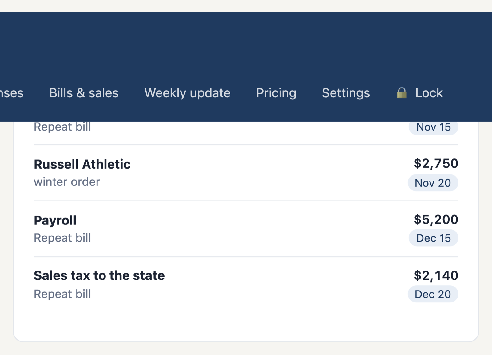
- Anything overdue is marked in red.
- Anything due in the next week is marked in amber.
- This is the same list the big number has already set money aside for.
Putting your numbers in Page 12 of 27
Start here: money in the bank
This is the foundation. Until the site knows your bank balance, every other number is a guess.
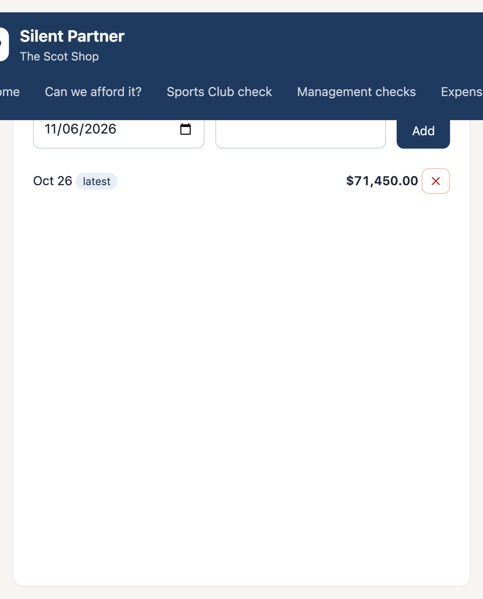
- Press Bills & sales along the top.
- Look up the current balance on your bank’s website or your last statement.
- Put the date that balance is from, and the amount.
- Press Save balance.
Putting your numbers in Page 13 of 27
Weekly sales
So the site knows roughly what the shop takes in, and can allow for money still to come.
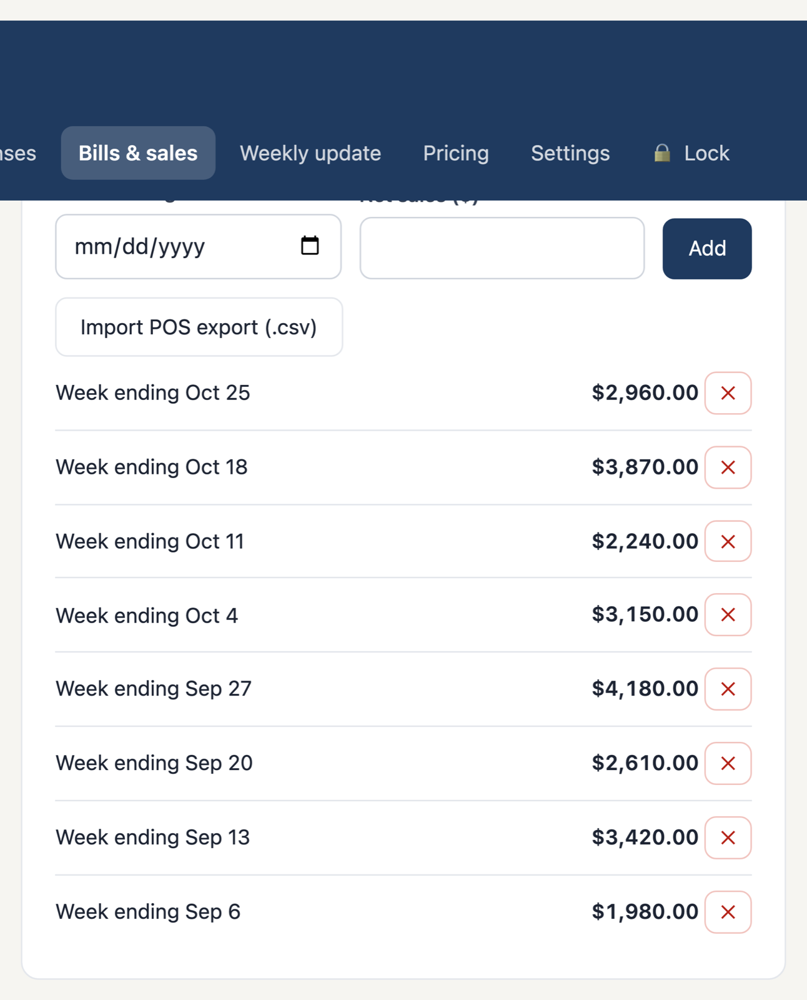
- Put in the week-ending date and what the shop took, after refunds.
- Press Save sales.
- Or, if your till can produce a spreadsheet, press Import sales and choose the file.
Putting your numbers in Page 14 of 27
Bills that repeat
Enter payroll, taxes and anything else regular once, and the site will keep setting money aside for them for ever.
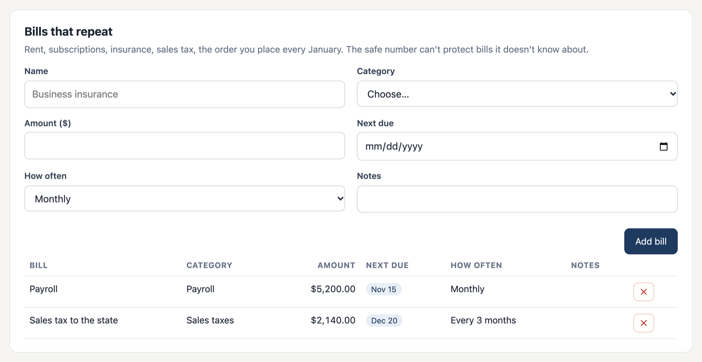
- Give the bill a name you will recognise.
- Put in the amount and the next date it is due.
- Choose how often: monthly, quarterly or yearly.
- Press Add bill.
Putting your numbers in Page 15 of 27
Logging an expense
The everyday job. A minute each, whenever something is bought or a bill arrives.
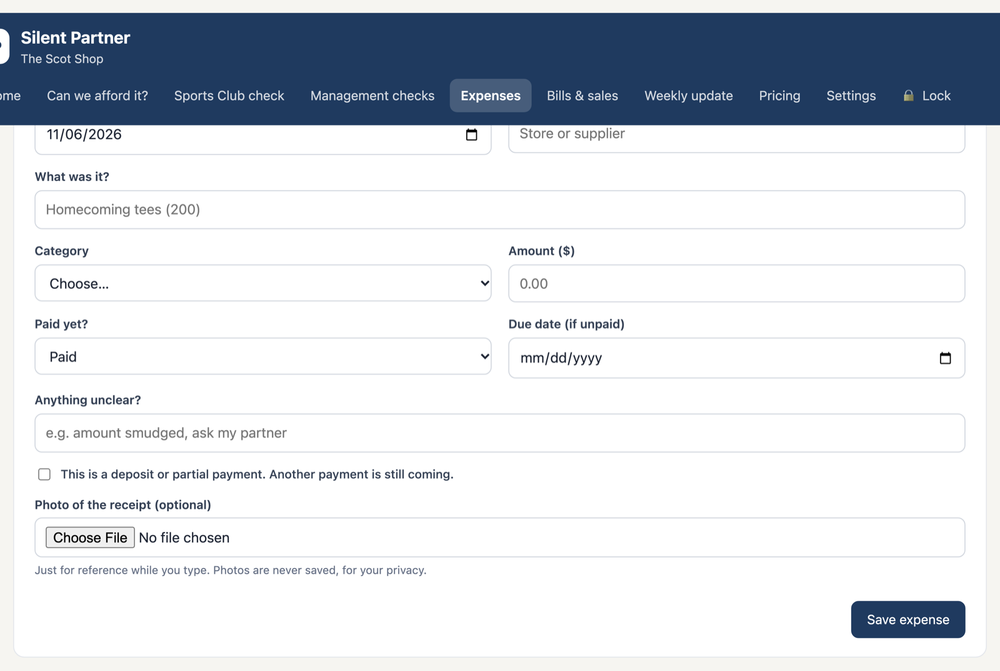
| Date | When it happened. |
|---|---|
| Who was paid | The supplier. Type a name you have used before and it will suggest the same category. |
| What it was for | A few words for your own memory. |
| Category | Which kind of spending it is. |
| Amount | What it cost. |
| Paid or unpaid | Paid means the money has gone. Unpaid means a bill you still owe — then give it a due date. |
Putting your numbers in Page 16 of 27
The list of everything
Every expense, newest first, with anything needing attention marked.
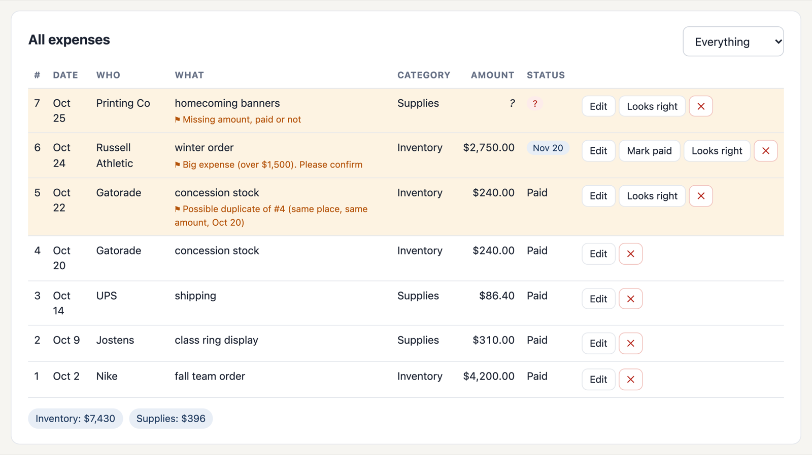
- Use the dropdown to show only unpaid bills, or only things needing your OK.
- Press Mark paid when a bill is settled — the big number updates straight away.
- Press Edit to correct anything. Press Delete to remove it.
The questions it answers Page 17 of 27
Can we afford it?
For when somebody asks for something specific and you need an answer you can defend.
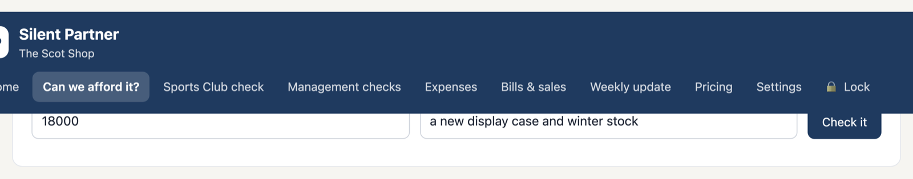
- Press Can we afford it? along the top.
- Type the amount, and a few words about what it is for.
- Press Check it.
The questions it answers Page 18 of 27
...and the answer you get
Not just yes or no. It names the bills at risk and offers a middle option.
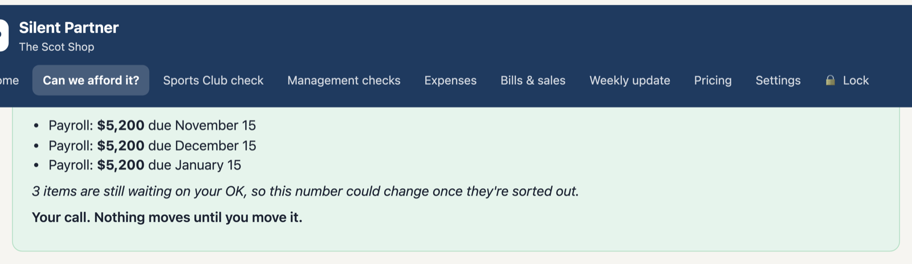
If it says hold off, it will tell you how far into your cushion the spending would dig, which bills are at risk, and a smaller figure that would be safe — and when to look again.
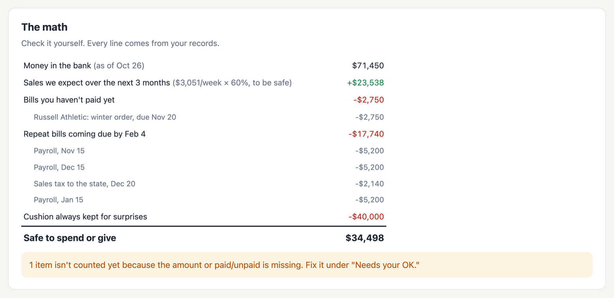
The questions it answers Page 19 of 27
The Sports Club check
The big one. The Sports Club owns the shop, so the year-end payment is its share of the year — not a gift.
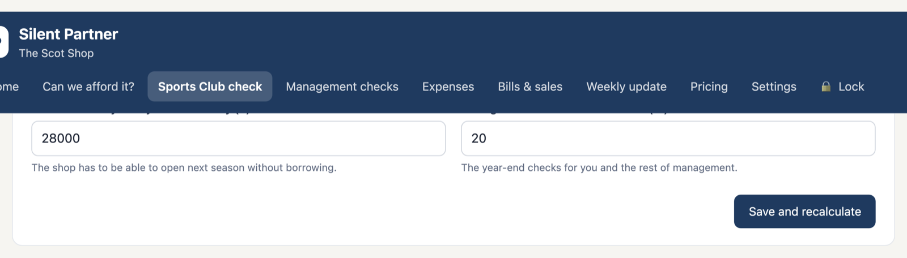
Two things come off before the Club’s share can be worked out:
- What the shop needs to open next season without borrowing. You type that figure in.
- The management checks, as a percentage of what is left.
Whatever survives both is the Sports Club’s check, and the working is shown so you can take it to a meeting.
The questions it answers Page 20 of 27
Management checks
Splitting the management share between the people who get one.
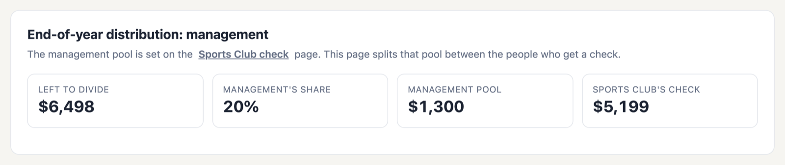
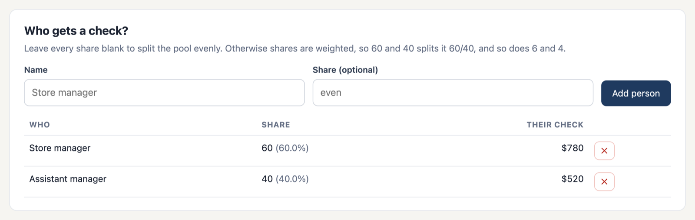
- Leave the shares blank and the money is divided evenly.
- Or put in numbers to weight it. 60 and 40 divides it the same way 6 and 4 does — they do not have to add up to 100.
The questions it answers Page 21 of 27
Are you charging enough?
Works out what something really costs to sell, including your own time, and whether the price covers it.
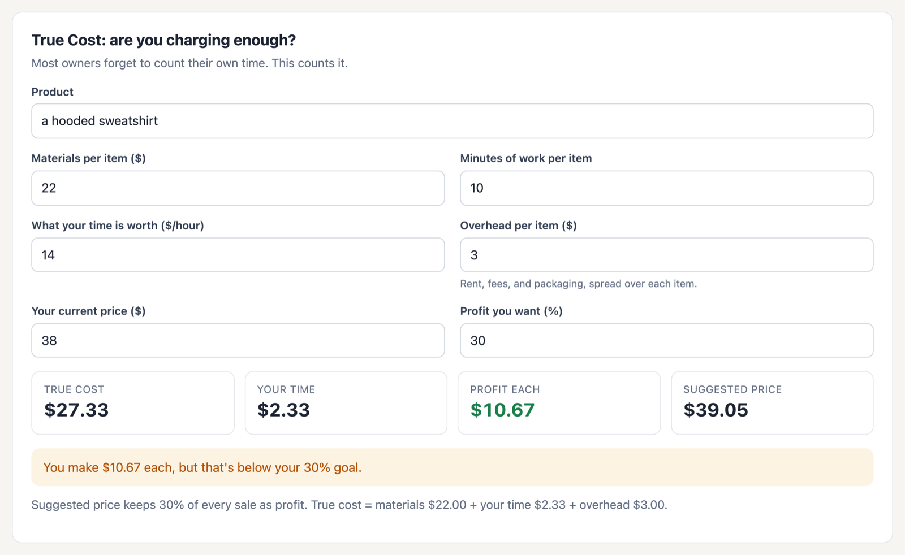
The important box is minutes of your time. Most small shops look profitable only because nobody is counting the owner’s hours.
The questions it answers Page 22 of 27
The weekly update
A short, plain summary of where the shop stands, written for you to send to somebody else.
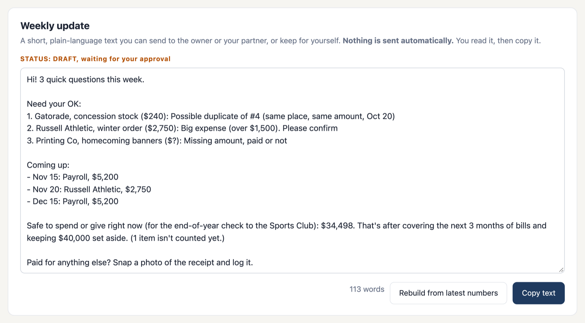
- Press Weekly update along the top.
- Read it. Change any of the wording you like — it is just text.
- Press Copy, then paste it into an email or a text message.
Looking after it Page 23 of 27
Settings: your shop
The handful of figures that shape every calculation. They are already filled in with your answers — change them whenever they stop being true.
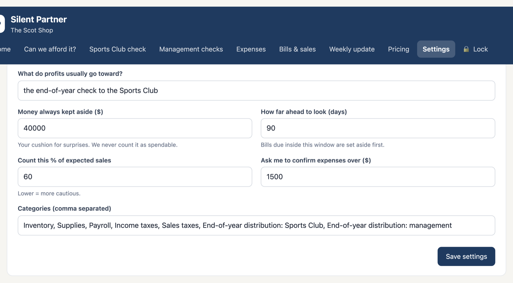
| Money always kept aside | Your cushion. Never treated as spendable. |
|---|---|
| How far ahead to look | Bills due inside this many days are set aside first. 90 days by default. |
| Count this % of expected sales | Lower is more cautious. |
| Ask me to confirm expenses over | Anything bigger gets flagged for a second look. |
| Categories | Your own list of kinds of spending. |
Looking after it Page 24 of 27
Keeping a copy
A backup is one file holding everything, locked with your password. Keep one somewhere safe.
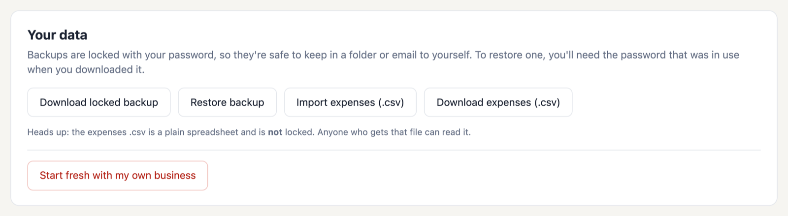
- Download locked backup saves the file. It is safe to email to yourself — nobody can read it without your password.
- Restore backup puts one back. It will ask for the password that was in use when the backup was made.
- Download expenses gives you a plain spreadsheet for your accountant.
Looking after it Page 25 of 27
Saving somewhere other than this computer
Optional, and switched off unless somebody sets it up for you.
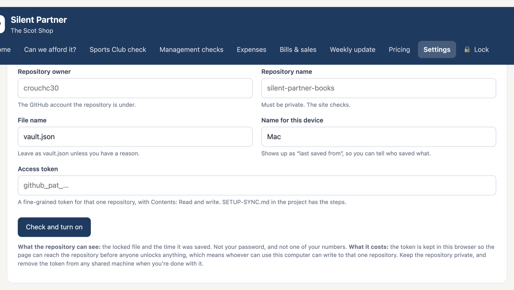
Normally the books live in this browser, on this computer. That is private, but it means that if the computer is replaced or the browser is cleared, they are gone.
Switched on, the site also keeps a locked copy in a private online store after every change. The books then survive the computer, and two people can work on them at once without losing each other’s work.
Looking after it Page 26 of 27
If something looks wrong
The usual causes, and what to do about them.
| The big number looks too low | Read the working on the home page. Usually a large unpaid bill, or a repeat bill falling inside the window. |
|---|---|
| The big number says $0 | Your known bills use up everything above the cushion. The working will name them. |
| A number has not changed | Check whether the expense is waiting under Needs your OK. Incomplete entries are left out until they are finished. |
| The password will not work | Check Caps Lock. Capitals and spaces do not matter, but the letters do. |
| It says the password the link came with no longer works | That is correct, and it is on purpose. Once you chose your own, that is the only one that opens your books. Nothing has been lost — type yours instead. |
| Does closing the page lose my work? | No. Every entry is saved the moment you type it. Close the tab, shut the computer, come back next week: it is all there, behind your password. |
| Something was deleted by mistake | Restore your most recent backup, under Settings. |
| The page looks broken | Close the tab and open the link again. Nothing is lost; everything is saved as you type. |
Looking after it Page 27 of 27
The short version
If you remember only one page, make it this one.
| Every week | Update the bank balance. Put in the week’s sales. |
|---|---|
| Whenever money moves | Log it under Expenses. A minute each. |
| Before you say yes to anything | Use Can we afford it? |
| Before a meeting | Use the Weekly update, or the working on the home page. |
| At the end of the year | Use the Sports Club check. |
| Now and then | Download a backup and keep it somewhere safe. |
| Never lose | Your password. It is the only way in, and it cannot be reset. |